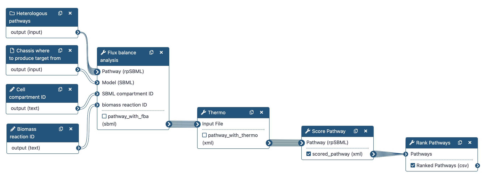
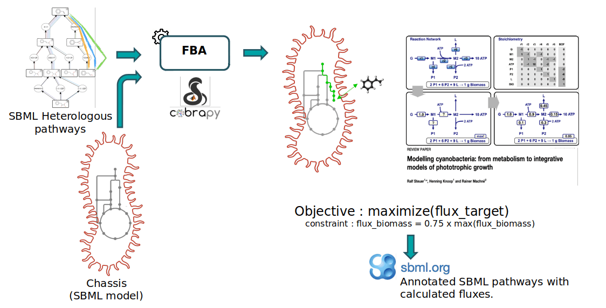
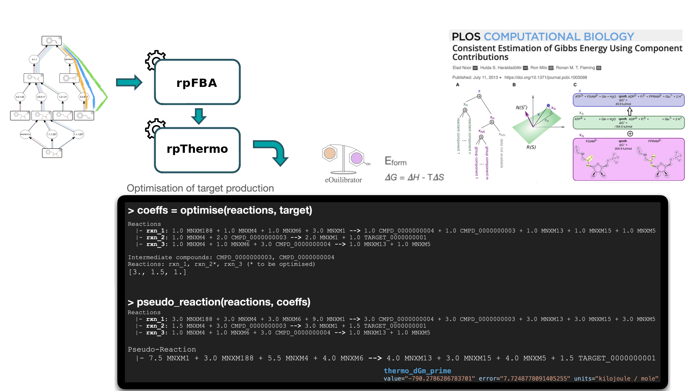
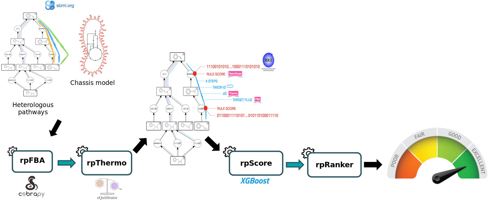

Tutorial — Pathway Design¶
Progress in synthetic biology is enabled by powerful bioinformatics tools such as those aimed to design metabolic pathways for the production of chemicals. These tools are available in SynBioCAD portal which is the first Galaxy set of tools for synthetic biology and metabolic engineering1.
In this tutorial, we will use a set of tools from the Pathway Analysis workflow which will enable you to evaluate a set of heterologous pathways previously produced by the RetroSynthesis workflow in a chassis organism (E. coli). These tools are available in the Galaxy SynbioCAD platform.
Here we will identify the theoretically best performing pathways by ranking them based on the four following criteria: target product flux, thermodynamic feasibility, pathway length and enzyme availability.
We recommend that you follow the Retrosynthesis tutorial before starting the current tutorial which will enable you to find pathways to synthesize a target compound with E. coli.
Four main steps will be run using the following workflow:
-
To rank the computed heterologous pathways, we need to calculate some metrics. This is why an in-house Flux Balance Analysis (FBA) was developed to calculate the production flux of a given target (e.g. xylotol, lycopene, ...). The method forces a fraction of its maximal flux through the biomass reaction while optimizing for the target molecule. This is achieved by the Flux Balance Analysis tool.
-
The Thermo tool is used to estimate thermodynamics values (based on Gibbs free energies) for each pathway to know whether a producing pathway is feasible in physiological conditions. The contribution of individual reactions to the final pathway thermodynamic is balanced solving a linear equation system.
-
The Score Pathway tool is used to calculate a global score combining target flux, pathway thermodynamics, pathway length and enzyme availability.
-
Pathways are ranked based on the global score using the Rank Pathways tool.

Pathway Analysis Workflow
Before starting
- Navigation: Use the right sidebar to navigate through the tutorial.
- Tools: Each tool is represented by its icon and version .
- Troubleshooting: for issues using Galaxy please check the Galaxy FAQ.
- Galaxy FAQ: web page is long, use your browser search function (Ctrl+F or Cmd+F) to find relevant topics.
Data Preparation¶
The input data required are:
-
A collection of pathways provided as SBML such as those outputted by the RetroSynthesis workflow.
-
A metabolic model of the chassis organism (e.g. E. coli), provided as an SBML file.
Targeted compound and chassis
In the course of this tutorial, we will focus on the bioproduction of xylitol in an Escherichia Coli strain.
The pathways to investigate were obtained from the Retrosynthesis tutorial, and the chassis organism is modeled by the E. coli core model (obtained from the BiGG database4).
Create a new history¶
How-to: Create a new history
Create as new history named Pathway Analysis - Xylitol.
Details: Creating a New History — Galaxy FAQ
It is recommended to create a new history for each tutorial to avoid confusion with existing datasets.
Add pathways and model files¶
Hands-on: Add pathways and model files
-
Import pathways files from the online resources:
https://raw.githubusercontent.com/tduigou/galaxy-synbiocad-tutos/refs/heads/main/data/pa-inputs/rp_002_0001.xml https://raw.githubusercontent.com/tduigou/galaxy-synbiocad-tutos/refs/heads/main/data/pa-inputs/rp_004_0001.xml https://raw.githubusercontent.com/tduigou/galaxy-synbiocad-tutos/refs/heads/main/data/pa-inputs/rp_005_0001.xml https://raw.githubusercontent.com/tduigou/galaxy-synbiocad-tutos/refs/heads/main/data/pa-inputs/rp_007_0001.xmlHow-to: Importing via links
- Copy link(s) to clipboard
- Click Upload Data at the top of the tool panel
- Select Paste/Fetch Data
- Paste link(s) into text field
- Click Start
- Close the window
More details: Import via Link — Galaxy FAQ
-
Create a collection (list) named
Predicted Pathwaysand containing the SBML pathways. Do not include the model file.How-to: Creating a dataset collection
-
Import model file:
https://raw.githubusercontent.com/tduigou/galaxy-synbiocad-tutos/refs/heads/main/data/pa-inputs/e_coli_core.xml -
Rename the E. coli model to
Model - SBML.
Pathway Analysis¶
Estimate production flux¶
Notice that the starting compounds (in other words, the precursors) of the predicted pathways (also referred as the heterologous pathways) are compounds that have been initially extracted from the genome-scale metabolic model (GEM) of the organism we are interested in (also referred as chassis). While this step is out of the scope of the present Pathway Analysis tutorial, this means that the precursors of predicted pathways are also present in the chassis model. Hence, predicted pathways and the chassis organism model can be merged to construct "augmented" whole-cell models, enabling flux analysis of these metabolic systems. This is what we'll do here to predict the production flux of a compound of interest.
Within the frame of this tutorial, we'll use E. coli ecoli_core GEM (downloaded from the BiGG database) to model the metabolism of E. coli and target is xylitol. The extraction of precursor compounds and the pathway prediction have already been performed during the RetroSynthesis workflow (available in Galaxy SynbioCAD platform).
The FBA (Flux Balance Analysis) method used to calculate the flux is a mathematical approach (as decribed in section Methods1) which uses the COBRApy package2 and proposes 3 different analysis methods (standard FBA, parsimonious FBA, fraction of reaction). The first two methods are specific to the COBRApy package and the last one Fraction of Reaction is an in-house analysis method to consider the cell needs for its own maintenance while producing the target compound.
Within the workflow, the purpose of the Flux Balance Analysis tool is to predict the production flux of the targeted compound, while considering the cellular needs. Under such simulation conditions, the analysis that returns a low production flux may be due to some precursor compounds having a limiting production flux, nor cofactor fluxes involved not being sufficiently balanced by the chassis native metabolism. Pathways with high flux would be caused by both the precursor compounds and the cofactors being in abundance. In either case, bottlenecks that limit the flux of the pathway may be investigated (this is outside of the scope of the workflow) and pathways that do not theoretically generate high yields can be filtered out.
We first perform an FBA (with COBRApy) optimizing the biomass reaction and record its maximal theoretical flux. The upper and lower bounds of the biomass reaction are then set to a same amount, equals to a fraction of its previously recorded optimum (default is 75% of its optimum). The method then performs a second FBA where biomass flux is enforced to this fraction of its optimum while optimizing the target production flux. Simulated fluxes are recorded directly into the SBML file and all changed flux bounds are reset to their original values before saving the output file.

Flux Balance Analysis (FBA) workflow for pathway analysis.
Note
Blocking compounds that cannot provide any flux are temporarily removed from heterologous reactions for the FBA evaluation. Such cases can happen due to side substrates or products of predicted reactions that do not match any chassis compound, representing dead-end paths.
Hands-on: Flux Balance Analysis
Run Flux balance analysis (Galaxy Version 6.5.0+galaxy0) with parameters:
- Select Pathway(s):
- Dataset collection input type Double check input type
- Dataset
Predicted Pathways
- Select Model:
- Single dataset input type
- Dataset
Model - SBML
- SBML compartment ID:
c. - Reaction ID to optimise:
rxn_target - Biomass reaction ID: use
R_BIOMASS_Ecoli_core_w_GAM. - Constraint based simulation type: select
Fraction of Reaction - Advanced options : leave default values
Q1: What are the format and the extension of the output files ?
- The output is an SBML file with
.xmlextension.
Q2: What is the FBA score for rp_002_0001 pathway ? difficult
- Click on the output collection to expand it and see the list of SBML files.
- Click to open the file
rp_002_0001. - Search (Ctrl+F or Cmd+F) for
fba_fractionwithin a<groups:listOfGroups>section. - The value is ~
2.48...
Q3: What does the FBA score represent ?
The FBA score represents the production flux of the target compound (here xylitol) when the biomass flux is constrained to 75% of its maximal theoretical value.
Compartment ID
You can specify the compartment from which the chemical species were extracted. The default is c, the BiGG code for the cytoplasm.
Reaction ID to optimise
The reaction ID to optimize is the reaction producing the target compound within each SBML. It is named rxn_target in the SBMLs produced by the RetroSynthesis workflow. For SBMLs from other sources, check the reaction ID of the reaction producing the target compound and use it as input.
Biomass reaction ID
The biomass reaction ID objective stands for the e_coli_core model. For other models, one can search in the model the term biomass and pick the corresponding ID.
Hands-on: Rename the output collection
Rename the output collection to FBA - Annotated Pathways.
Estimate thermodynamics¶
The goal of the thermodynamic analysis is to estimate the feasibility of the predicted pathways toward target production, in physiological conditions. The eQuilibrator libraries3 are used to calculate the formation energy of compounds by either using public database IDs (when referenced within the tools internal database) or by decomposing the chemical structure and calculating its energy of formation using the component contribution method.
The reaction Gibbs energy is estimated by combining the energy of formation of the compounds involved in the reaction (with consideration for the stoichiometric coefficients).
Thermodynamic of a pathway is estimated by combining the Gibbs energy of reactions involved in it. The contribution of individual reactions to the final pathway thermodynamic is balanced using a linear equation system, according to the relative uses of intermediate compounds across the pathway (See Thermodynamics in Methods section for further details1. A pathway Gibbs energy below zero indicates that the thermodynamic is favorable toward the production of the target.
The Thermo Galaxy tool is used to estimate thermodynamics values (based on Gibbs free energies) for each pathway to know whether a producing pathway is feasible in physiological conditions

Thermodynamic Analysis concepts.
Hands-on: Estimate Thermodynamics
Because the Thermo tool is resource-intensive and will be time-consuming, Option 1 has to be used during this tutorial — Option 2 is provided for information but do not run it today .
-
Download the pre-computed results on your computer: Thermo - FBA - Annotated pathways.zip
-
Unzip the file (locally on your computer).
-
Upload the unzipped file to your current history:
- Click on Upload Data at the top of the tool panel
- Select Choose local files
- Select all files from unzipped folder (hold Shift key to select multiple files)
- Click Start
- Close the window
-
Create a collection (list) named
Thermo - FBA - Annotated Pathwaysand containing the SBML pathways.
Do not include other files.
Q1: What is the thermodynamic value for the reaction with EC number 1.1.1.307 for rp_002_0001 pathway?
- Use the Visualize Pathway tool to generate a graphical representation of all pathways.
- Click on
1.1.1.307reaction belonging to therp_002_0001. - On the right panel, look for the ΔrG' (standard Gibbs free energy change) value
- The value is
-2.258kJ/mol.
Q2: What a negative ΔrG' indicates?
A negative value indicates that the reaction is favorable in physiological conditions, hence it will proceed spontaneously in the forward direction.
Run Thermo (Galaxy Version 6.5.0+galaxy0) with parameters:
- Select Pathway(s):
- Dataset collection input type Double check input type
- Dataset
FBA - Annotated Pathways
- Advanced options : leave default values
Hands-on: Rename the output collection
It not set yet, rename the output collection to Thermo - FBA - Annotated Pathways.
Estimate global scores¶
The Pathway Score tool provides a global score for a given pathway previously annotated by the Flux Balance Analysis and Thermo tools. This score is computed by a machine learning (ML) model (cf. Machine Learning Global Scoring1. The model takes as input features describing the pathway (thermodynamic feasibility, target flux with fixed biomass, length) and the reactions within the pathway (reaction SMARTS, Gibbs free energy, enzyme availability score) and prints out the probability for the pathway to be a valid pathway. The ML model has been trained on literature data (cf. section Benchmarking with literature data1) and by a validation trial (cf. section Benchmarking by expert validation trial1).

Pathway Score estimation concepts.
Hands-on: Score Pathways
Run Score Pathway (Galaxy Version 6.5.0+galaxy0) with parameters:
- Pathway(s):
- Dataset collection input type Double check input type
- Dataset
Thermo - FBA - Annotated Pathways
- Advanced options : leave default values
Outputted files
The tool outputs new annotated SBML files representing the pathways, containing the global_score annotation, as well as other annotations such as the FBA score and the pathway Gibbs energy.
Q1: What does the computed score represent?
The computed score represents the probability for the pathway to be a valid pathway.
Hands-on: Rename the output collection
It not set yet, rename the output collection to Scored - Thermo - FBA - Annotated Pathways.
Visualize pathways¶
Hands-on: Visualize pathways
Run Visualize pathways (Galaxy Version 6.5.0+galaxy0) with parameters:
- Select Source SBMLs format :
Collection - Select Source SBML :
Scored - Thermo - FBA - Annotated Pathways - Advanced options : leave default values
View the output
- Click on the icon of the output dataset
Pathway Visualizationto open it. - Alternatively (1): right-click on the icon and select Open in new tab to open it in a new browser tab.
- Alternatively (2): click on the icon and select Download to download the file and open it locally with a web browser.
Q1: How many pathways are visualized?
There are 4 pathways.
Q2: What is the global score of the pathway rp_002_0001?
- Click on the pathway
rp_002_0001to open it. - On the left panel, look for the "Info" icon and click on it.
- On the right panel, look for the
Global scoresection. - The value is
0.974.
Q3: What is the best pathway?
The best pathway is rp_002_0001 with a global score of 0.974.
Q4: What is the FBA score of the best pathway?
The FBA score of the best pathway rp_002_0001 is 2.484.
Conclusion¶
To select the best pathways for producing the Xylitol in E. coli, some metrics have been estimated, namely production flux of the target, pathway thermodynamics. Global score estimation relies on these criteria plus the pathway length and the enzyme availability score using a machine learning model.
The best pathway for producing Xylitol in E. coli is rp_002_0001 with a global score of 0.974. Further investigations should be performed such as identifying potential enzyme sequences for the reactions, codon optimization, DNA synthesis and assembly to finally express the pathway in the chassis organism.
License¶
Attributions: Thomas Duigou, Kenza Bazi-Kabbaj, Guillaume Gricourt, Joan Hérisson, Ioana Popescu, Jean-Loup Faulon.
This tutorial is licensed under CC BY 4.0.
References¶
-
Hérisson, J.; Duigou, T.; Du Lac, M.; Bazi-Kabbaj, K.; Sabeti Azad, M.; Buldum, G.; Telle, O.; El Moubayed, Y.; Carbonell, P.; Swainston, N.; Zulkower, V.; Kushwaha, M.; Baldwin, G. S.; Faulon, J.-L. The Automated Galaxy-SynBioCAD Pipeline for Synthetic Biology Design and Engineering. Nature Communications 2022, 13 (1), 5082. https://doi.org/10.1038/s41467-022-32661-x. ↩↩↩↩↩↩
-
Ebrahim, A.; Lerman, J. A.; Palsson, B. O.; Hyduke, D. R. COBRApy: COnstraints-Based Reconstruction and Analysis for Python. BMC Systems Biology 2013, 7 (1), 74. https://doi.org/10.1186/1752-0509-7-74. ↩
-
Beber, M. E.; Gollub, M. G.; Mozaffari, D.; Shebek, K. M.; Flamholz, A. I.; Milo, R.; Noor, E. [eQuilibrator]{.nocase} 3.0: A Database Solution for Thermodynamic Constant Estimation. Nucleic Acids Research 2021, gkab1106. https://doi.org/10.1093/nar/gkab1106. ↩
-
King, Z. A.; Lu, J.; Dräger, A.; Miller, P.; Federowicz, S.; Lerman, J. A.; Ebrahim, A.; Palsson, B. O.; Lewis, N. E. BiGG Models: A Platform for Integrating, Standardizing and Sharing Genome-Scale Models. Nucleic Acids Research 2016, 44 (D1), D515--D522. https://doi.org/10.1093/nar/gkv1049. ↩
Note
The tool takes as input pathways in SBML format and returns annotated pathways (with thermodynamics information for each reaction) in SBML format too.